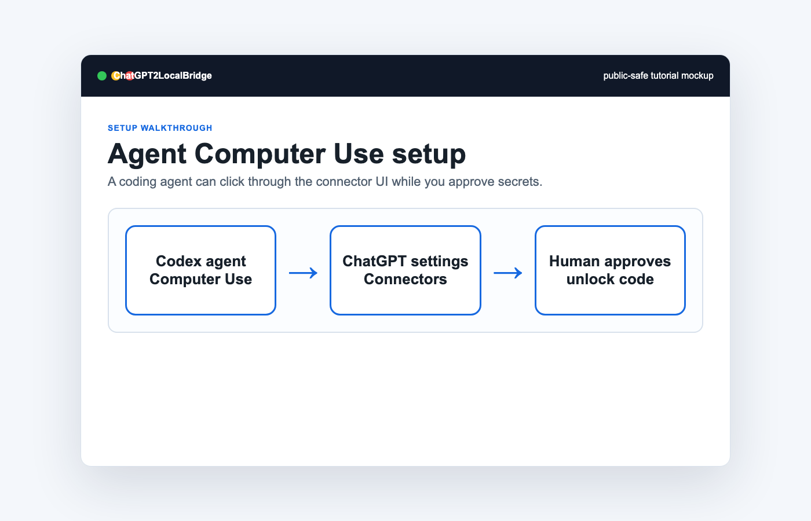

Do not reveal secrets
The agent may paste from local clipboard or guide the operator, but it must not print unlock codes or tokens into chat.
This guide is for advanced users who want a local coding agent to help configure the ChatGPT connector UI. The human operator still owns all secrets and final authorization.
The agent may paste from local clipboard or guide the operator, but it must not print unlock codes or tokens into chat.
If the browser asks the human to trust a tunnel or site, the agent should pause and ask the human to click.
The agent should test `/health`, OAuth metadata, and a minimal `file.list` or `file.read_path` call after authorization.
After linking, call `policy.read` before broad file operations and confirm skill roots use `~/.codex/skills`.
Use `skill.route` or `skill.search` before reading a local `SKILL.md`, then use `skill.bundle` for references.
You are configuring ChatGPT2LocalBridge with Computer Use.
1. Verify local health at http://127.0.0.1:3838/health.
2. Verify OAuth metadata at the public tunnel URL.
3. Open ChatGPT connector settings.
4. Create a custom connector named ChatGPT2LocalBridge.
5. Use URL https://YOUR-DOMAIN/mcp and OAuth for public tunnels.
6. If the OAuth page asks for an unlock code, ask the human operator to provide or approve it.
7. Never print tokens or unlock codes.
8. After linking, send a minimal file.list or file.read_path test inside the approved workspace.
9. Call policy.read and verify allowedProjectRoots and skillRoots.
10. Use skill.route before reading local skills.
11. For Linux paths, create a separate Linux connector instead of reusing the Mac connector.